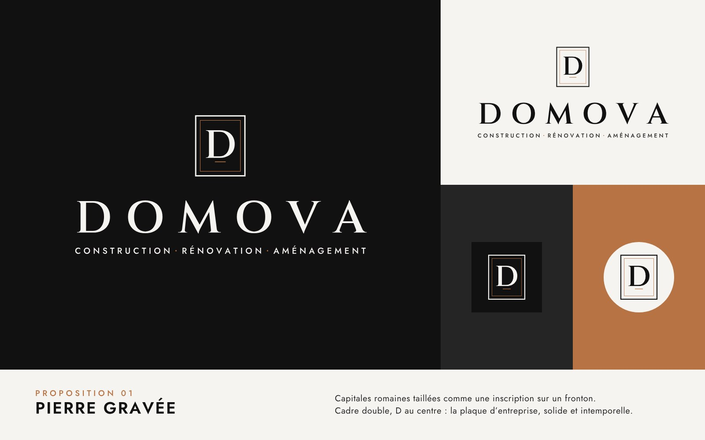
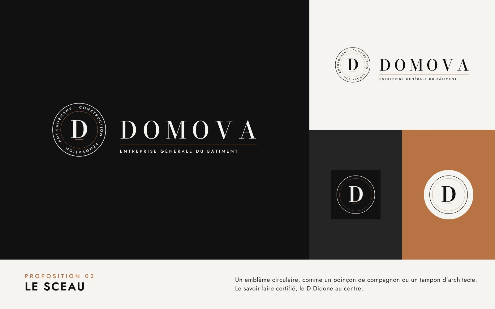
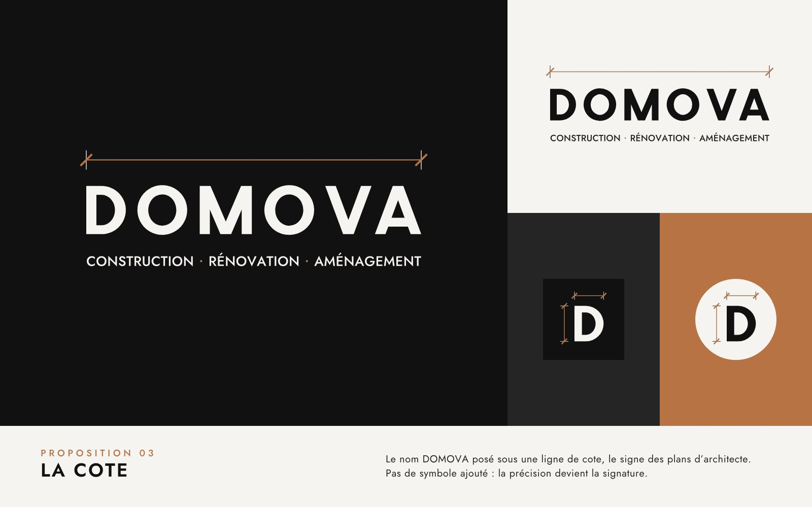
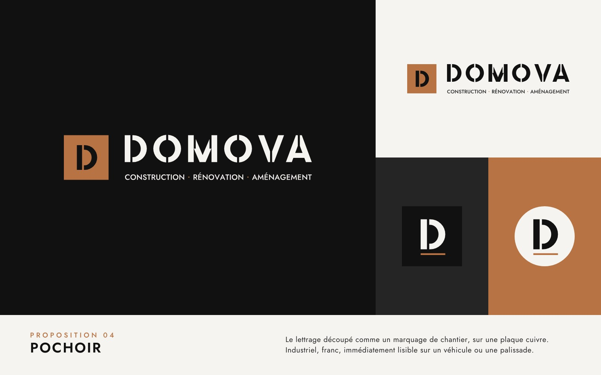
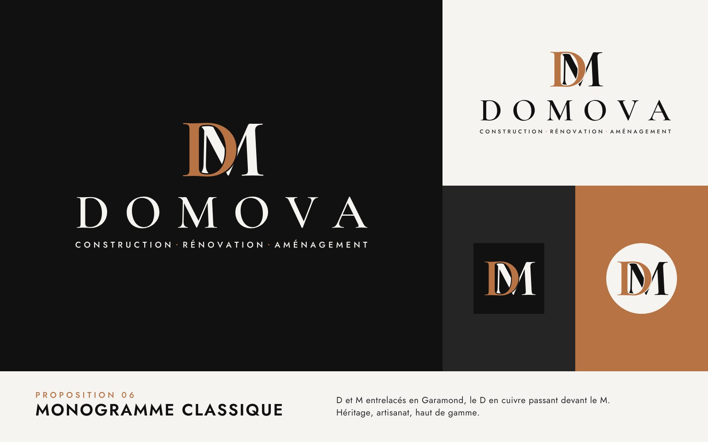

<title>DOMOVA Propositions</title>
<meta name="claude:viewport-fit-sides" content="cover">
<link rel="stylesheet" href="https://fonts.googleapis.com/css2?family=Jost:wght@400;500;600&family=JetBrains+Mono:wght@400&display=swap">
<style>
/* Layout: one board per row, notes beside it; collapses to a stack on phones */
:root{--ink:#111111;--anth:#252525;--paper:#F5F4F0;--copper:#B87345;--muted:#9C9890;--line:rgba(245,244,240,.12);
--f:"Jost","Futura","Century Gothic",system-ui,sans-serif;--m:"JetBrains Mono",ui-monospace,Menlo,monospace;color-scheme:dark}
*{box-sizing:border-box}
body{margin:0;background:var(--ink);color:var(--paper);font-family:var(--f);font-size:17px;line-height:1.6}
main{max-width:1240px;margin:0 auto;padding-left:max(16px,env(safe-area-inset-left,0px));padding-right:max(16px,env(safe-area-inset-right,0px));padding-block:clamp(48px,8vw,96px);display:grid;gap:56px}
header{display:grid;gap:14px}
.eyebrow,.num{font-family:var(--m);font-size:12px;letter-spacing:.2em;text-transform:uppercase;color:var(--copper)}
h1{font-weight:600;font-size:clamp(30px,4.5vw,48px);line-height:1.1;margin:0;text-wrap:balance}
h2{font-weight:600;font-size:24px;margin:0;letter-spacing:.02em}
p{margin:0;max-width:62ch}
.lede{color:var(--muted);font-size:19px}
article{display:grid;grid-template-columns:minmax(0,2fr) minmax(0,1fr);gap:32px;align-items:start;padding-top:32px;border-top:1px solid var(--line)}
article img{width:100%;display:block}
.txt{display:grid;gap:12px}
.note{color:var(--muted);font-size:15px;padding-left:14px;border-left:2px solid var(--copper)}
footer p{color:var(--muted)}
@media (max-width:860px){article{grid-template-columns:minmax(0,1fr)}}
</style>
<main>
<header><span class="eyebrow">DOMOVA · Série 2 · Nouvelles pistes de logo</span>
<h1>Six directions, sans le monogramme géométrique</h1>
<p class="lede">Même palette, mêmes couleurs, même rigueur. Chaque planche montre le logo sur fond noir, sur fond clair, en icône d’application et en photo de profil ronde.</p></header>
<article><div class="txt"><span class="num">Proposition 01</span><h2>Pierre gravée</h2><p>Capitales romaines (Cinzel) taillées comme une inscription sur un fronton, dans un cadre double avec le D au centre. C’est la plaque d’entreprise : solide et intemporelle.</p><p class="note">Très haut de gamme, rassurant. Le cadre fin demande un marquage soigné (vinyle découpé, gravure).</p></div></article><article><div class="txt"><span class="num">Proposition 02</span><h2>Le Sceau</h2><p>Un emblème circulaire, comme un poinçon de compagnon ou un tampon d’architecte. Les métiers tournent autour du D en Didone.</p><p class="note">Fort en tampon, en broderie ou sur un casque. Le texte circulaire devient illisible en petit : l’icône garde seulement le D cerclé.</p></div></article><article><div class="txt"><span class="num">Proposition 03</span><h2>La Cote</h2><p>Le lettrage DOMOVA que vous aimez déjà, sous une ligne de cote d’architecte. La précision des plans devient la signature, sans symbole ajouté.</p><p class="note">La rupture la plus douce : on garde le nom tel quel. L’icône (D coté) est plus technique que décorative.</p></div></article><article><div class="txt"><span class="num">Proposition 04</span><h2>Pochoir</h2><p>Le lettrage découpé comme un marquage de chantier, avec une plaque cuivre portant un D au pochoir. Industriel, franc, terrain.</p><p class="note">Le plus percutant sur une camionnette ou une palissade. Moins « architecte », plus « entreprise de travaux ».</p></div></article><article><div class="txt"><span class="num">Proposition 05</span><h2>L’Arche</h2><p>Une voûte tracée d’un trait sur un seuil, avec le nom en capitales fines très espacées. Évoque l’entrée, le passage, l’ouvrage.</p><p class="note">Élégant et aérien, proche d’une agence d’architecture ou d’aménagement intérieur. Le trait fin se perd sur un sweat brodé.</p></div></article><article><div class="txt"><span class="num">Proposition 06</span><h2>Monogramme classique</h2><p>D et M entrelacés en Garamond, le D en cuivre passant devant le M. Le nom en Garamond espacé.</p><p class="note">L’esprit maison d’artisan et d’héritage. Le plus éloigné du monde du BTP : très distinctif, à valider avec votre clientèle.</p></div></article>
<footer><p>Dites-moi celle (ou le mélange) qui vous parle : je la développe ensuite avec toutes les déclinaisons, les fichiers SVG, PDF et PNG, et les mises en situation (camionnette, textile, carte, panneau, devis, réseaux).</p></footer>
</main>